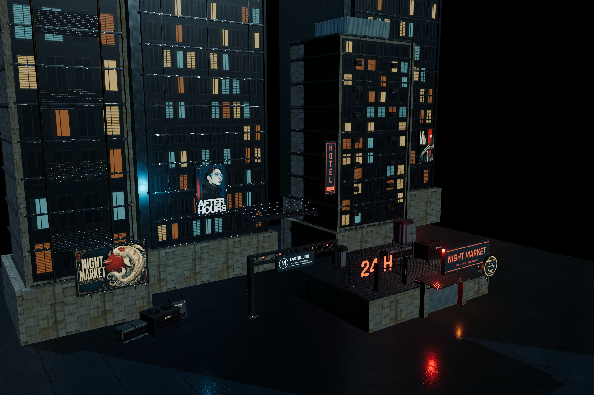
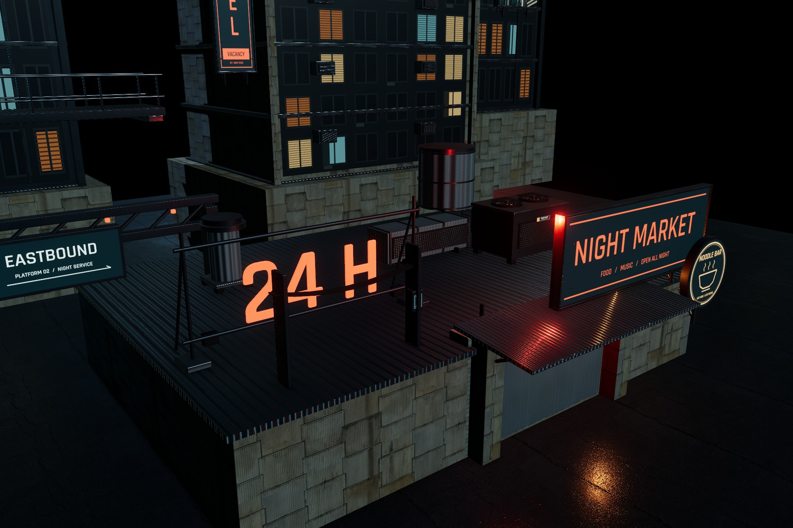
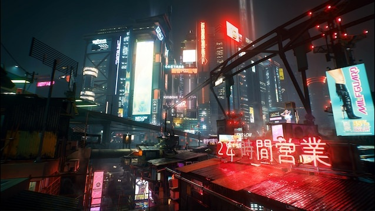
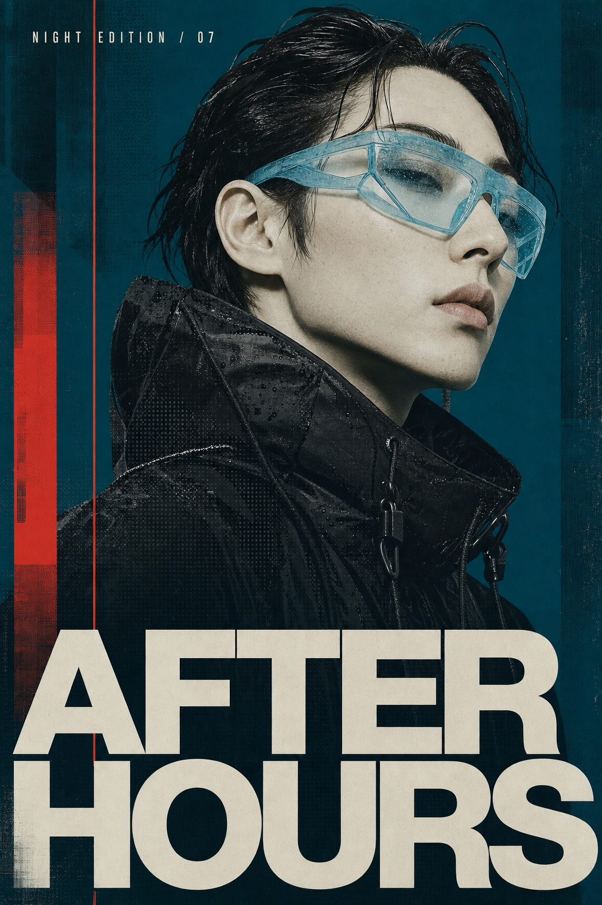
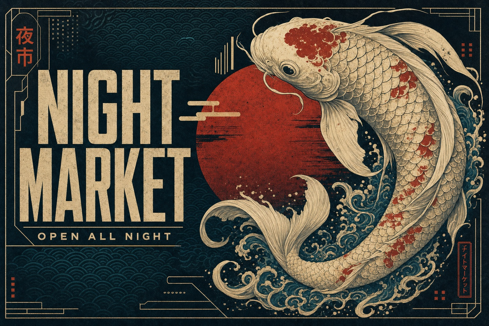
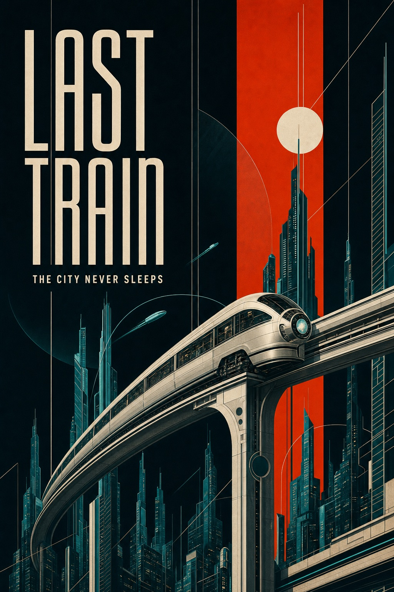

Vector Rush / September 17, 2026
Night city.
Built for a closer look.
A reusable set of architecture, rooftop machinery, sign hardware and surface materials drawn from the teal-and-red city reference. Prepared as an asset review candidate.
19 modular prefabs38 LOD meshes33 Unity materials3 Scenario artworks

Native Unity capture · dedicated asset inspection scene · no racing integration or motion blur.
Details that survive a slow look

Native Unity close-up: mounting hardware, scan-based roof material and localized red light.
The reference

Owner-supplied visual direction. The kit supplies reusable ingredients; this inspection scene is not the finished reference city.
Deep teal shadows, concentrated red light, occupied windows and layered rooftop infrastructure guide the material and shape choices.
Inspect the kit
Open an asset to inspect its latest neutral render. Material comparisons use the same light for dry and wet variants.
Original advertising artwork
Three full-resolution textures generated through Scenario, mounted on exported sign geometry. Lettering and artwork have been inspected.



Ready for asset review
Unity import checks cover scale, orientation, triangle counts, UVs, material bindings and LOD references. Native captures verify the rebuilt inspection scene. Blender close-ups show the source geometry and material pairs.
Race placement, driving-distance readability, animated billboard integration and full-city polish remain separate work. No performance or artistic acceptance is claimed.